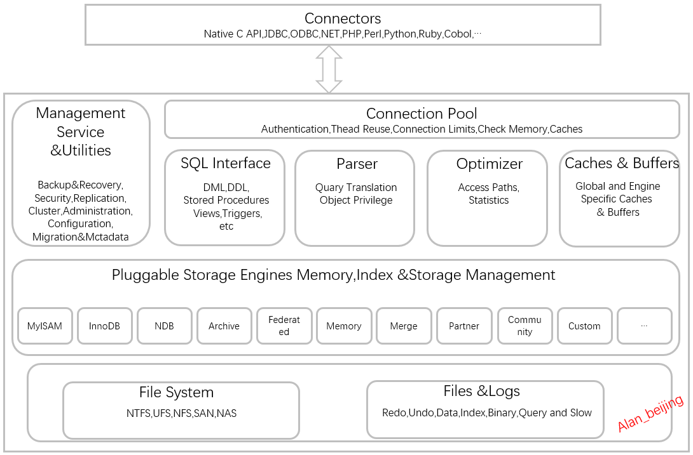

Mysql-005浅谈Mysql架构体系
一、数据库和数据库实例
在MySQL的学习研究中，存在两个非常容易混淆的概念，即数据库和数据库实例。在MySQL中，数据库和数据库实例定义如下：
数据库：存储数据的集合；
数据库实例：操作数据库的集合。
如上定义很清楚了，数据库是用来存储数据的，数据库实例是用来操作数据的，从操作系统的角度，数据库实例表现为一个进程，对应多个线程，
在非集群数据库架构中，数据库与数据库实例存在一 一对应关系，在数据库集群中，可能存在多个数据库实例操作一个数据库情况，即多对一关系。
二、MySQL基架
对于MySQL来说，虽然经历了多个版本迭代（MySQL5.5,MySQL 5.6,MySQL 5.7,MySQL 8）,但每次的迭代，都是基于MySQL基架的，MySQL基架大致包括如下几大模块组件：
（1）MySQL向外提供的交互接口（Connectors）
（2）管理服务组件和工具组件(Management Service & Utilities)
（3）连接池组件(Connection Pool)
（4）SQL接口组件(SQL Interface)
（5）查询分析器组件(Parser)
（6）优化器组件（Optimizer）
（7）缓存主件（Caches & Buffers）
（8）插件式存储引擎（Pluggable Storage Engines）
（9）物理文件（File System）

-
MySQL向外提供的交互接口（Connectors）
Connectors组件，是MySQL向外提供的交互组件，如java,.net,php等语言可以通过该组件来操作SQL语句，实现与SQL的交互。
-
管理服务组件和工具组件(Management Service & Utilities)
提供对MySQL的集成管理，如备份(Backup),恢复(Recovery),安全管理(Security)等
-
连接池组件(Connection Pool)
负责监听对客户端向MySQL Server端的各种请求，接收请求，转发请求到目标模块。每个成功连接MySQL Server的客户请求都会被
创建或分配一个线程，该线程负责客户端与MySQL Server端的通信，接收客户端发送的命令，传递服务端的结果信息等。
-
SQL接口组件(SQL Interface)
接收用户SQL命令，如DML,DDL和存储过程等，并将最终结果返回给用户。
-
查询分析器组件(Parser)
首先分析SQL命令语法的合法性，并尝试将SQL命令分解成数据结构，若分解失败，则提示SQL语句不合理。
-
优化器组件（Optimizer）
对SQL命令按照标准流程进行优化分析。
-
缓存主件（Caches & Buffers）
缓存和缓冲组件
-
MySQL存储引擎
(1). 什么是MySQL存储引擎
MySQL属于关系型数据库，而关系型数据库的存储是以表的形式进行的，对于表的创建，数据的存储，检索，更新等都是由MySQL
存储引擎完成的，这也是MySQL存储引擎在MySQL中扮演的重要角色。
研究过SQL Server和Oracle的读者可能很清楚，这两种数据库的存储引擎只有一个，而MySQL的存储引擎种类比较多，如MyISAM存储引擎，InnoDB存储引擎和Memory存储引擎.
MySQL之所以有多种存储引擎，是因为MySQL的开源性决定的。MySQL存储引擎，从种类上来说，大致可归结为官方存储引擎和第三方存储引起。MySQL的开源性，允许第三方基于MySQL骨架，开发适合自己业务需求的存储引擎。
(2). MySQL存储引擎作用
MySQL存储引擎在MySQL中扮演重要角色，其作比较重要作用，大致归结为如下两方面：
作用一：管理表创建，数据检索，索引创建等
作用二：满足自定义存储引擎开发。
(3). MySQL引擎种类
不同种类的存储引擎，在存储表时的存储引擎表机制也有所不同，从MySQL存储引擎种类上来说，可以分为官方存储引擎和第三方存储引擎。
当前，也存在多种MySQL存储引擎，如MyISAM存储引擎，InnoDB存储引擎，NDB存储引擎，Archive存储引擎，Federated存储引擎，Memory存储引擎，Merge存储引擎，Parter存储引擎，Community存储引擎，Custom存储引擎和其他存储引擎。
其中，比较常用的存储引擎包括InnoDB存储引擎，MyISAM存储引擎和Momery存储引擎。
(4). 几种典型MySQL存储引擎比较
-
物理文件（File System）
实际存储MySQL 数据库文件和一些日志文件等的系统，如Linux，Unix,Windows等。
三、一个查询流程图
四、参看文献
【01】MySQL权威指南（美）Paul Dubois著 杨涛 杨晓云 王群 等译
【02】MySQL技术内幕 InnoDB存储引擎 姜承尧著
【03】SQL学习指南 （美）Alan Beaulieu 著